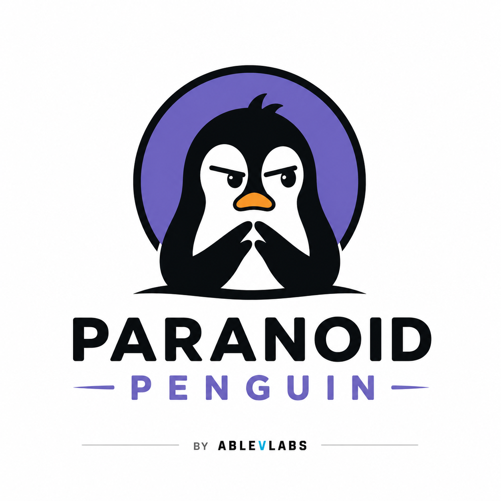

A one-click desktop app that checks how locked-down your own computer and home network really are, hands you a plain A–F security grade, and lists exactly what to fix first — every finding mapped to the MITRE ATT&CK framework real security teams use, and organised around the eight CISSP domains, including honest notes on the ones a scanner can't reach.
Pulls today's list of vulnerabilities being actively exploited in the wild — straight from CISA KEV and FIRST.org EPSS, the feeds the pros watch.
What's installed, which ports are open, whether your firewall and antivirus are actually on — cross-referenced against the live threat list.
Checks your Python packages against real CVE databases and tells you exactly what to update. Version-accurate, so it's the finding you can trust.
A mini CIS benchmark: disk encryption, UAC, Remote Desktop, the ancient SMBv1 protocol, guest account, update history.
T1210 · T1021 · T1548Who can get in, and how hard it is once they try: admin rights, password policy, account lockout, autologon, saved credentials. The domain home setups are weakest in, because none of it looks like anything until it matters. It never reads or stores a password — the autologon check knows Windows keeps that one in the registry in plain text, and deliberately reports only whether the setting is on.
T1078 Valid Accounts · T1110 Brute Force · T1555 Password StoresNot the machine — the data. Encryption at rest on every drive, backup state, how much you'd actually lose, key and certificate files, what's still sitting in the Recycle Bin. A laptop with no backup and an unencrypted drive passes every other check in this tool. Counts and sizes only; no filename is ever recorded.
T1490 Inhibit Recovery · T1552 Creds in FilesEverything that launches at boot — exactly where malware hides to survive a restart. Flags anything running from a temp folder.
T1547 AutostartReads the Windows event log for bursts of failed sign-ins — the fingerprint of someone guessing their way in.
T1110 Brute ForceLists every device on your own network and yells when a new one shows up that it hasn't seen before.
T1200 Hardware AdditionsShows what your PC is talking to right now — every live outbound connection, the program behind it, and the server it's reaching. How you catch malware phoning home.
T1071 C2 · T1041 ExfilIs the network you're on actually encrypted? Also flags open networks your laptop has saved — the thing that gets you at coffee shops.
T1557 AiTMThe eight CISSP domains are a map of what a security professional should know — not a checklist a scanner can tick off. Some a program running on one laptop can assess properly. Some it can assess partly. One it cannot touch at all, because you can't scan a machine to find out whether someone has an incident response plan. Forcing all eight to look equally covered would be dishonest, so the gaps are stated instead. Security teams produce exactly this artifact — a control coverage assessment — and the gaps are the interesting part of it.
Partial. A scanner can measure your exposure to vulnerabilities the world is actively exploiting. It cannot tell you whether you have a policy, a recovery plan, or a legal obligation you're failing. Those are decisions and documents, not machine state — so the tool asks you instead.
Assessed. Encryption at rest, backup state, data volume, key material, disposal. All readable from the machine.
Assessed. A mini CIS Benchmark — the configuration questions an auditor asks, answered from the registry and system state.
Assessed. The strongest coverage here: devices on the network, live outbound connections, wireless encryption, alerts when something new appears.
Assessed. Account inventory, privilege, password policy, lockout, second factor, stored credentials.
Partial. This tool is an assessment — that's the domain in action. What it can't do is independent verification: it tests configuration, not whether a control actually stops an attack. And you can't honestly assess yourself on your own machine.
Assessed. Persistence review, failed sign-in monitoring, live connection watching — the detection half of operations.
Partial. Dependency scanning is real and version-accurate. But the domain also covers secure coding, review, testing and the build pipeline. It checks what you installed, not what you wrote.
Five assessed, three partial. For the parts no program can answer, the dashboard asks directly — if this machine died right now, what would you lose? · have you ever verified a control works, rather than that it's switched on? · is there anything in your code history that shouldn't be there? Answering those is on you. The tool's job is to ask.
Two authoritative, free feeds power the global view: the CISA Known Exploited Vulnerabilities catalog and EPSS exploitation-probability scores. Local checks use read-only PowerShell, pip-audit, and nmap. Everything is scored and prioritized into one grade, then rendered as a self-contained dashboard. It runs entirely on 127.0.0.1 — nothing is uploaded anywhere.
Free and open source. Runs on your own machine, nothing leaves it.